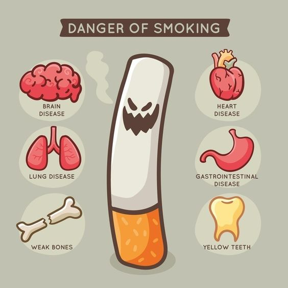

Health Effects of Smoking

Smoking has been proven to have numerous detrimental effects on human health. Such as:
"Brain Disease" , "Lung Disease" , "Weaken Bones" , "Heart Disease" , "Gastrointestinal
disease" , "Yellow Teeth" , etc.
Below are some of the most common health issue faced by smokers.
Lung Cancer:
Smoking is a leading cause of lung cancer, resulting from the inhalation of harmful
chemicals present in cigarette smoke. The carcinogens and toxins in tobacco smoke
damage the cells lining the lungs, causing genetic mutations and uncontrolled cell
growth. Over time, this process can lead to the formation of tumors and the spread
of cancerous cells. Lung cancer caused by smoking is a significant public health
concern, accounting for a substantial portion of all lung cancer cases. Quitting
smoking can significantly reduce the risk of developing lung cancer and other
related health complications.
Reduced Fertility:
Smoking has negative effects on both male and female fertility.
In women, it can
cause fertility issues, complications during pregnancy, and an increased risk of
miscarriage and
preterm birth.
In men, smoking can affect sperm quality and reduce fertility.
smoking is associated with lower sperm count, reduced sperm motility, and abnormal
sperm shape, all of which can impede fertility.
Reason being, Smoking can negatively affect hormone production. Exposure to tobacco
smoke can harm the reproductive system as smoking can damage the DNA in people.
chronic obstructive
pulmonary disease (COPD):
Smoking is the primary cause of chronic obstructive pulmonary disease (COPD), a
progressive and debilitating lung condition. The inhalation of harmful chemicals in
cigarette smoke triggers chronic inflammation and damage to the airways and air sacs
in the lungs. This results in reduced airflow, persistent coughing, wheezing, and
breathlessness. Over time, COPD worsens and significantly impairs lung function,
making it challenging for individuals to breathe and engage in daily activities.
Hearing and Vision Loss:
Smokers are 70% more likely than nonsmokers to develop vision and hearing loss.
Smokers are 2 times as likely to develop cataracts, a clouding of the eye's internal
lens, and a leading cause of blindness; the more someone smokes, the higher the
chances for cataracts and the earlier in life they are likely to develop.
Smoking causes inflammation that could impede blood flow to the cochlea, part of the
inner ear critical to hearing. In time, this will make it harder to hear
high-pitched sounds
Various forms of smoking
Smoking takes various forms, each involving the inhalation of tobacco or other substances.
Traditional cigarette smoking, the most common form, involves burning and inhaling tobacco
leaves. Shisha or waterpipe smoking involves tobacco heated by
charcoal, with smoke passing through water before inhalation.
Cigar smoking entails larger amounts of tobacco, potentially increasing health
risks. Pipe smoking, using a bowl-shaped pipe, also exposes users to harmful compounds.
Smokeless tobacco products like chewing tobacco or snuff are placed in the mouth, delivering
nicotine without combustion.
Additionally, emerging
alternatives like electronic cigarettes (e-cigarettes) or vaping devices vaporize
nicotine-containing liquids. While some alternatives may seem less harmful, most still
contain nicotine and pose health risks.
4 / 4

Shisha
❮
❯